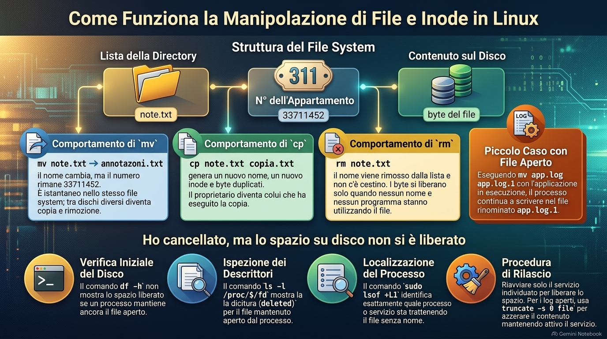
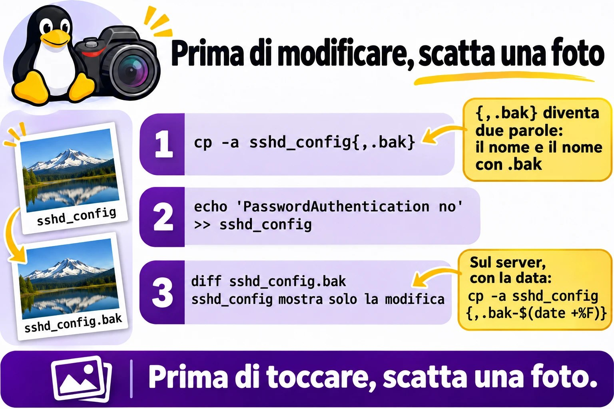
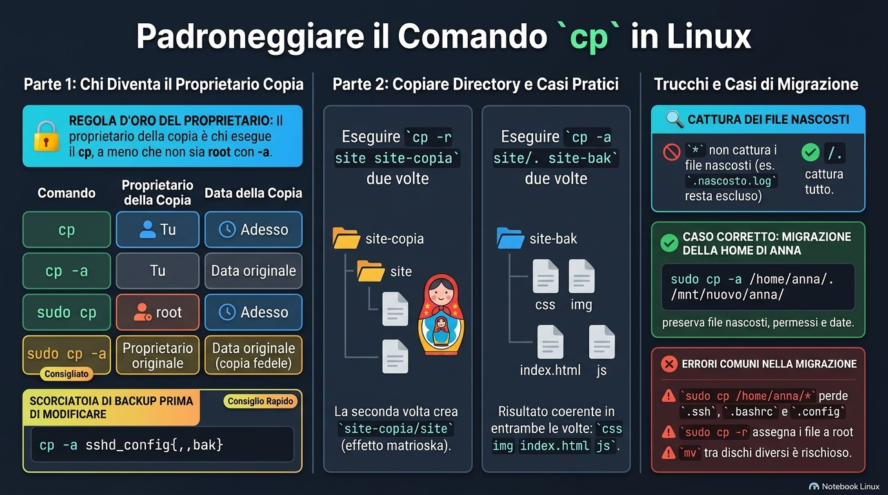
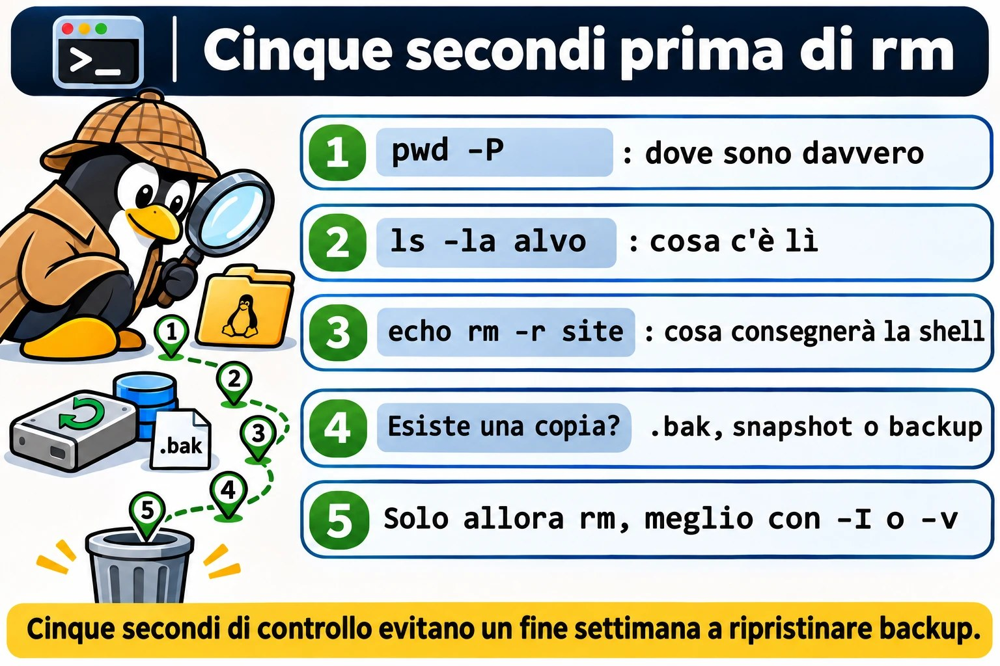

Lezione 1.4 · Creare, copiare, spostare e cancellare
Impari a creare, copiare, spostare e cancellare file e directory senza perdere ciò che conta. La strada non è imparare a memoria le opzioni. È capire che cosa fa ogni comando al suo interno e farti tre abitudini: copiare prima di toccare, controllare prima di cancellare e diffidare dei comandi che non chiedono nulla.
| Scheda | Lezione 1.4 |
|---|---|
| Modulo | M1 · Riga di comando, lezione 4 di 10 |
| Quando | Settimana 2 |
| Alla fine sei in grado di | Creare un albero di directory con un solo comando; fare la copia di sicurezza di una configurazione prima di modificarla; copiare directory preservando proprietario, permessi e date; rinominare e spostare senza sostituire nulla per errore; cancellare sapendo esattamente che cosa sparirà; spiegare perché non c'è un cestino e perché a volte il disco resta pieno dopo rm |
| Prerequisiti | Lezione 1.3, con ~/lab13 ancora sulle VM |
| Durata | Circa 2h30 |
| Snapshot | m1a4-inicio e m1a4-fim su entrambe le VM |
1 · Riscaldamento
Tre domande, a memoria, prima di leggere qualsiasi cosa. Scrivi le risposte; le soluzioni le trovi alla fine per controllare.
- In una directory con
app1.log,app2.logeapp10.log, che cosa mostraecho app?.log? - Un file si chiama
-rf. Perchérm "-rf"non lo cancella, e quale comando lo cancella? - Il tuo prompt dice
/srv/app/current, ma la modifica che hai fatto non ha preso. Quale comando mostra dove sei davvero?
2 · Perché conta
Venerdì, ore 18. Un collega deve liberare spazio sul file server di un cliente e digita rm -rf /srv/arquivos/ antigo, con uno spazio di troppo dopo la barra. La shell consegna a rm due bersagli: l'intera /srv/arquivos/ e un antigo che lì nemmeno esiste. Il -f zittisce l'unico avviso che ci sarebbe stato. Nessuna domanda, nessun messaggio, nessun cestino. Il fine settimana diventa un ripristino di backup, se c'è un backup.
Il secondo caso è più comune e più discreto. Qualcuno ripristina una cartella dal backup con sudo cp -r. I file tornano, ma con root come proprietario e la data di oggi. Il sistema che usava la cartella smette di scriverci, e nessuno collega le due cose fino a lunedì.
Il terzo succede ogni settimana da qualche parte: un mv verso la cartella condivisa sostituisce, senza chiedere, un file con lo stesso nome che era di un'altra persona. Nel terminale, cp, mv e rm fanno esattamente ciò che hai digitato, senza chiedere conferma. Questa lezione mostra che cosa fa ciascuno al suo interno e le abitudini da pochi secondi che ti permettono di mettere le mani su un server di un cliente senza paura.
3 · Modello mentale
Una directory è l'elenco degli inquilini alla portineria del palazzo della Lezione 1.3. Ogni nome dell'elenco punta a un appartamento, ed è nell'appartamento che vive il contenuto.
mvcambia il nome nell'elenco. Rinominare, o passare il nome all'elenco di un altro piano, non sposta nessuno di appartamento. Per questo è istantaneo dentro lo stesso palazzo, che in Linux è lo stesso file system. Per un altro palazzo, cioè un altro disco, allora è un trasloco vero: copiare tutto e svuotare il vecchio appartamento.cparreda un appartamento nuovo uguale al vecchio. Il proprietario diventa chi ha copiato e la data è quella di oggi, a meno che tu non chieda-a, che copia anche proprietario, data e permessi.rmcancella il nome dall'elenco. Quando nessun nome punta più all'appartamento e nessuno è lì dentro, cioè nessun programma ha il file aperto, lo spazio si libera. Non c'è un cestino: la portineria non conserva l'elenco con i nomi cancellati.- Nessuno chiede «sei sicuro?». Per impostazione predefinita,
cpemvsostituiscono in silenzio un nome che esiste già nella destinazione, ermcancella senza conferma.
Da questa pianta discendono tre conseguenze:
- Prima di toccare una configurazione, copia.
cp -acon l'espansione delle graffe lo fa in un secondo. - Prima di cancellare, guarda la lista: il protocollo della Lezione 1.3, con
pwd -P,ls -laedecho. - Cancellare non libera spazio finché un programma usa ancora il file. È per questo che a volte il disco resta pieno dopo
rm.
Lo stesso palazzo, disegnato:
lista do diretório nº do apartamento conteúdo no disco
notas.txt ───────→ 33711452 ───────→ [ bytes do arquivo ]
mv notas.txt anotacoes.txt o nome muda; o nº continua 33711452
cp notas.txt copia.txt nome novo, nº novo, bytes duplicados
rm notas.txt o nome sai da lista; os bytes ficam livres
quando nenhum nome e nenhum programa os usaIl numero dell'appartamento esiste davvero: si chiama inode, e ls -i lo mostra. Lo vedrai nel Passo 3.
Ponte Windows. In Esplora risorse, cancellare manda nel Cestino, e sostituire un file apre una finestra di conferma. Nel terminale di Linux non esiste né l'una né l'altra cosa. E un comando fa il lavoro di due: mv è insieme il move e il ren di cmd.exe.


4 · Concetto a livelli
Essenziale
| Termine | Che cos'è | Esempio |
|---|---|---|
mkdir -p | Crea la directory e i genitori mancanti; non si lamenta se esiste già | mkdir -p ~/lab14/a/b/c |
touch | Crea un file vuoto; se esiste già, aggiorna solo la data | touch index.html |
cp | Copia file; la copia riceve proprietario e data nuovi | cp notas.txt /tmp/ |
cp -r | Copia una directory e tutto ciò che contiene | cp -r site site-copia |
cp -a | Copia d'archivio: ricorsiva, preservando proprietario, permessi, date e link simbolici | cp -a /etc/ssh ~/ssh-bak |
mv | Rinomina o sposta; nello stesso file system, cambia solo il nome | mv velho.txt novo.txt |
rm | Cancella file; le directory, solo con -r | rm erro.log |
rmdir | Cancella solo directory vuote | rmdir img |
-i | Chiede prima di ogni sostituzione o rimozione | mv -i a.txt pasta/ |
-I | Con rm: chiede una volta sola, prima di cancellare molto | rm -rI copia |
-v | Mostra ogni elemento creato, copiato, spostato o cancellato | rm -v *.tmp |
-f | Forza: non chiede e non avvisa se il bersaglio non esiste | rm -f cache.tmp |
| Inode | Il numero dell'appartamento: dove si trova davvero il contenuto | ls -i |
Tre forme di copia che userai per tutta la vita:
cp -a sshd_config sshd_config.bak: la copia di sicurezza prima di modificare. Con le graffe,cp -a sshd_config{,.bak}.cp -a origem destino: la copia che preserva tutto, per backup e ripristino.cp -a origem/. destino/: copia il contenuto dentro la destinazione e dà lo stesso risultato la prima e la decima volta.
Ponte Windows
| In Windows | In Linux |
|---|---|
md, che crea già i genitori | mkdir -p |
copy | cp |
xcopy /e o robocopy /e | cp -r |
robocopy /copyall | cp -a |
move e ren | mv, per entrambe le cose |
del | rm |
rd /s | rm -r |
rd | rmdir |
| Cestino | Non esiste nel terminale: backup, snapshot e .bak |
| Finestra «Sostituire il file?» | Non esiste per impostazione predefinita; -i chiede |
Approfondimento
Cancellare è sganciare. rm toglie il nome dall'elenco; a liberare lo spazio è il sistema, quando nessun nome e nessun programma usano più il contenuto. Esistono strumenti di recupero, ma su XFS ed ext4 raramente salvano la giornata. Ciò che salva è il backup, lo snapshot e la copia .bak che hai fatto prima.
cp crea, mv rinomina. Per questo mv preserva tutto, anche l'etichetta di SELinux, e cp no. Tra file system diversi, mv diventa una copia seguita da una rimozione: ci mette tempo e richiede spazio libero nella destinazione.
Che cosa conserva -a. cp -a equivale a -dR --preserve=all: entra nelle directory, copia i link simbolici come link simbolici e preserva proprietario, gruppo, permessi, date, etichette di SELinux e attributi estesi. Come utente normale, non puoi regalare file a un'altra persona, quindi il proprietario della copia sei tu. Solo root preserva il proprietario originale.
La copia cambia a seconda che la destinazione esista. cp -r a b crea b come copia di a se b non esiste. Se b esiste già, crea b/a. Lo stesso comando, eseguito due volte, dà risultati diversi. cp -a a/. b/ copia sempre il contenuto di a dentro b.
Il -f zittisce. Con rm, il -f toglie le domande e anche il messaggio di bersaglio inesistente. E vale l'ultima opzione: rm -f spegne un alias rm -i. Chi digita rm -rf per abitudine non vede mai la domanda che farebbe l'alias.
-I è meglio di -i. -i chiede file per file, e dopo la ventesima y nessuno legge più niente. -I chiede una volta, quando la rimozione è ricorsiva o riguarda più di tre file.
Un quasi cestino. cp e mv accettano --backup=numbered: prima di sostituire, conservano il file vecchio come nome.~1~, nome.~2~ e così via.
rm -rf / viene rifiutato; rm -rf /* no. La protezione predefinita, --preserve-root, riconosce solo la root scritta da sola. /* viene espanso dalla shell in /bin, /boot, /etc e il resto, e ognuno diventa un argomento normale. È per questo che una variabile vuota in uno script è pericolosa, come vedi nel Passo 7.
5 · Rocky × Debian
I comandi sono gli stessi, del pacchetto coreutils. Quello che cambia è ciò che sta intorno, e questo decide se il comando chiede prima o cancella in silenzio:
| rocky-lab | debian-lab | |
|---|---|---|
| Alias di root | rm -i, cp -i e mv -i attivi in /root/.bashrc: come root, tutti e tre chiedono | Le stesse righe esistono in /root/.bashrc, commentate: non chiedono |
| Il tuo utente | Senza questi alias: non chiede | Uguale |
sudo rm, sudo cp, sudo mv | sudo non usa gli alias: non chiedono mai | Uguale |
| Versione di coreutils | 8.32 | 9.x: alcuni messaggi cambiano una parola o due |
| File system dell'installazione | XFS | ext4 |
mv dalla home a /tmp | Istantaneo se i due sono nello stesso file system | Sempre copia e rimozione, perché /tmp è in memoria |
| Etichetta di SELinux | mv porta con sé l'etichetta; cp riceve quella della destinazione. Può rompere un servizio. | Senza SELinux: la differenza non esiste |

6 · Lab guidato
Apri tre terminali: uno su rocky-lab, uno su debian-lab e uno sul nodo Proxmox, per gli snapshot. A ogni passo, esegui, confronta con l'output e solo dopo leggi il Decidi. Gli output sono estratti: numeri, date e nomi sul tuo schermo saranno diversi.
Ogni Decidi è un caso reale di lavoro. Scegli la lettera prima di guardare la tabella: sbagliare qui, con la spiegazione accanto, è il modo più economico di sbagliare.
Passo 1 · Snapshot prima di tutto. Le VM devono essere nello stato m1a3-fim, con ~/lab13 ancora lì. Sul nodo Proxmox dove gira ogni VM:
qm snapshot 201 m1a4-inicio
qm snapshot 202 m1a4-inicio
qm listsnapshot 201Output atteso: l'elenco termina con m1a3-fim, m1a4-inicio e current. Su entrambe le VM, controlla che la 1.3 abbia lasciato il materiale:
ls -A ~/lab13/logsPasso 2 · Creare l'intero albero in una volta. Su entrambe le VM:
mkdir ~/lab14
cd ~/lab14
mkdir site/cssQualcosa come:
mkdir: cannot create directory 'site/css': No such file or directorymkdir crea un solo livello. Il genitore site non esiste, quindi rifiuta. Ora con -p, e con -v per vedere ogni passaggio:
mkdir -pv site/{css,js,img}
echo site/{css,js,img}
mkdir -p site/css
mkdir siteQualcosa come:
mkdir: created directory 'site'
mkdir: created directory 'site/css'
mkdir: created directory 'site/js'
mkdir: created directory 'site/img'
site/css site/js site/img
mkdir: cannot create directory 'site': File existsTre cose da notare. Le graffe non sono di mkdir: la shell le espande prima, e echo mostra ciò che ha consegnato, come i caratteri jolly della 1.3. Il mkdir -p site/css ripetuto non dice nulla, perché esiste già ed è tutto a posto. Il mkdir site senza -p si lamenta.
Decidi 1 · Il deploy che fallisce sul server nuovo. Scenario: lo script di deploy esegue mkdir /srv/app/releases/$(date +%F) ogni notte. Su un server appena installato, fallisce con No such file or directory. Che cosa fai?
- A) Lo sostituisci con
mkdir -pnello script. - B) Cominci a eseguire lo script con
sudo. - C) Aggiungi
2>/dev/nullin fondo alla riga per far sparire l'errore. - D) Crei
/srv/app/releasesa mano su quel server e vai avanti.
Scegli un'opzione prima di continuare.
| Se hai scelto | Risultato | Perché |
|---|---|---|
| A | ✅ Giusto | Il -p crea i genitori mancanti e non fallisce se esistono già. Lo script comincia a funzionare su server nuovi e vecchi, la prima e la centesima notte. |
| B | ❌ Sbagliato | La mancanza di permessi direbbe Permission denied. L'errore qui è un genitore inesistente, e anche root non crea due livelli senza -p. |
| C | ❌ Sbagliato | Nasconde l'errore e il deploy prosegue senza la directory. Il guasto compare più avanti, lontano dalla causa. |
| D | ❌ Sbagliato | Risolve oggi e fallisce sul prossimo server nuovo. La correzione appartiene allo script. |
Da ricordare: -p significa "fai tutto il percorso e non lamentarti di ciò che esiste già".
Passo 3 · Il numero dell'appartamento. Prima touch, su entrambe le VM:
touch site/index.html site/css/style.css
ls -l --time-style=+%T site/index.htmlAspetta una decina di secondi e ripeti i due comandi. La dimensione resta zero, cambia solo l'ora. touch su un file che esiste già non cancella nulla: aggiorna solo la data. Ora l'inode, il numero dell'appartamento del Modello mentale:
echo "primeira linha" > notas.txt
ls -i notas.txt
mv notas.txt anotacoes.txt
ls -i anotacoes.txt
cp anotacoes.txt copia.txt
ls -i anotacoes.txt copia.txtQualcosa come:
33711452 notas.txt
33711452 anotacoes.txt
33711452 anotacoes.txt 33711460 copia.txtmv non ha cambiato il numero, solo il nome nell'elenco. La copia ha ricevuto un appartamento nuovo, con un numero suo.
Decidi 2 · Il log da 40 GB. Scenario: app.log pesa 40 GB, il disco ha 2 GB liberi e vuoi conservare il file attuale come app.log.1, nella stessa directory, con mv app.log app.log.1. L'app continua a girare. Che cosa succede?
- A)
mvè istantaneo e non occupa spazio, ma l'app continua a scrivere nel file che ora si chiamaapp.log.1. - B)
mvfallisce per mancanza di spazio, perché deve copiare i 40 GB. - C)
mvè istantaneo, e l'app comincia automaticamente a scrivere in un nuovoapp.log. - D)
mvci mette qualche minuto, proporzionale alla dimensione.
Scegli un'opzione prima di continuare.
| Se hai scelto | Risultato | Perché |
|---|---|---|
| A | ✅ Giusto | Nello stesso file system, mv cambia solo il nome nell'elenco. L'app ha aperto il file prima e tiene l'appartamento, non il nome: continua a scrivere lì. È per questo che logrotate avvisa il servizio dopo aver rinominato. |
| B | ❌ Sbagliato | Quello sarebbe cp, o un mv verso un altro disco. Sullo stesso disco non c'è copia. |
| C | ❌ Sbagliato | Nessuno crea il nuovo app.log. L'app comincia a usare un altro file solo quando riapre il log, dopo un reload o un restart. |
| D | ❌ Sbagliato | Il tempo proporzionale alla dimensione compare solo tra file system diversi. |
Da ricordare: mv sullo stesso disco è cambiare la targhetta sulla porta. Chi sta là dentro non se ne accorge nemmeno.
Passo 4 · La copia prima di modificare. Una configurazione finta, su entrambe le VM:
printf 'Port 22\nPermitRootLogin no\n' > sshd_config
echo cp -a sshd_config{,.bak}
cp -a sshd_config{,.bak}
ls -l sshd_config*Qualcosa come:
cp -a sshd_config sshd_config.bak
-rw-r--r--. 1 student student 32 Nov 2 10:12 sshd_config
-rw-r--r--. 1 student student 32 Nov 2 10:12 sshd_config.bak{,.bak} diventa due parole: il nome senza nulla e il nome con .bak. Ora modifica e confronta:
echo 'PasswordAuthentication no' >> sshd_config
diff sshd_config.bak sshd_config
cp -a sshd_config{,.bak-$(date +%F)}
ls sshd_config*Qualcosa come:
2a3
> PasswordAuthentication no
sshd_config sshd_config.bak sshd_config.bak-2026-11-02diff mostra esattamente che cosa hai cambiato. Con la data nel nome, il .bak di oggi non sostituisce quello di ieri. Sul server vero è lo stesso comando, con sudo e il percorso completo: sudo cp -a /etc/ssh/sshd_config{,.bak-$(date +%F)}.
Decidi 3 · Prima di toccare l'SSH del cliente. Scenario: stai per disattivare il login con password sull'SSH di un server di un cliente. Qual è il primo comando?
- A)
sudo cp -a /etc/ssh/sshd_config{,.bak-$(date +%F)} - B)
sudo cp /etc/ssh/sshd_config /tmp/ - C)
sudo vi /etc/ssh/sshd_config, con attenzione. - D)
sudo mv /etc/ssh/sshd_config{,.bak}e scrivere un file nuovo.
Scegli un'opzione prima di continuare.
| Se hai scelto | Risultato | Perché |
|---|---|---|
| A | ✅ Giusto | Copia accanto all'originale, con proprietario, permessi ed etichetta preservati, e con la data. Se sshd non riparte, il ritorno è un cp. |
| B | ❌ Sbagliato | /tmp viene pulita al reboot, e su Debian 13 sta in memoria. Il backup sparisce proprio quando ti serve di più. |
| C | ❌ Sbagliato | L'attenzione non è una via di ritorno. Se sshd non riparte, puoi perdere l'accesso senza sapere com'era prima. |
| D | ❌ Sbagliato | Per un istante il file non esiste. E quello nuovo nasce senza il contenuto, l'etichetta e i permessi dell'originale. |
Da ricordare: prima di toccare, fai una foto. La foto è il .bak con la data, accanto all'originale.


Passo 5 · Chi diventa proprietario della copia. Quattro copie dello stesso file di root, su entrambe le VM:
cp /etc/hosts hosts-cp
cp -a /etc/hosts hosts-a
sudo cp /etc/hosts hosts-sudo
sudo cp -a /etc/hosts hosts-sudo-a
ls -l /etc/hosts hosts-*Qualcosa come:
-rw-r--r--. 1 root root 158 Jun 23 2020 /etc/hosts
-rw-r--r--. 1 student student 158 Jun 23 2020 hosts-a
-rw-r--r--. 1 student student 158 Nov 2 10:15 hosts-cp
-rw-r--r--. 1 root root 158 Nov 2 10:15 hosts-sudo
-rw-r--r--. 1 root root 158 Jun 23 2020 hosts-sudo-aLeggi riga per riga:
| Comando | Proprietario della copia | Data della copia |
|---|---|---|
cp | Tu | Adesso |
cp -a, come te | Tu, perché un utente normale non consegna file a un'altra persona | Quella dell'originale |
sudo cp | root | Adesso |
sudo cp -a | Il proprietario originale | Quella dell'originale: copia fedele |
Regola: il proprietario della copia è chi esegue cp, a meno che non sia root con -a.
Decidi 4 · Il ripristino del venerdì. Scenario: la cartella /srv/dados/app, dell'utente app, è stata cancellata. Il backup è in /backup/app, fatto con cp -a. Come si ripristina?
- A)
sudo cp -a /backup/app /srv/dados/ - B)
sudo cp -r /backup/app /srv/dados/ - C)
cp -a /backup/app /srv/dados/, come tuo utente. - D)
sudo mv /backup/app /srv/dados/
Scegli un'opzione prima di continuare.
| Se hai scelto | Risultato | Perché |
|---|---|---|
| A | ✅ Giusto | Root con -a restituisce proprietario, permessi, date ed etichette com'erano. E il backup resta lì. |
| B | ❌ Sbagliato | I file tornano con proprietario root e la data di oggi. Il servizio, che gira come app, non riesce più a scrivere. Lo provocherai nel Guasto A. |
| C | ❌ Sbagliato | Senza root non consegni i file all'utente app, e probabilmente non scrivi nemmeno in /srv/dados. |
| D | ❌ Sbagliato | Ripristina e fa sparire il backup. Se qualcosa va storto, non c'è un secondo tentativo. E se /backup è un altro disco, mv copia tutto e cancella l'origine. |
Da ricordare: ripristinare è cp -a come root. Il backup resta dov'è.
Passo 6 · Copiare directory. Esegui la stessa copia due volte, su entrambe le VM:
cp -r site site-copia
ls site-copia
cp -r site site-copia
ls site-copiaQualcosa come:
css img index.html js
css img index.html js siteLa seconda volta, site-copia esisteva già, quindi cp ha creato site-copia/site. In un backup notturno questo diventa una matrioska. Ora nel modo che dà sempre lo stesso risultato:
rm -r site-copia
cp -a site/. site-bak
cp -a site/. site-bak
ls site-bakEntrambe le volte danno css img index.html js. site/. significa "ciò che sta dentro site". Ora i nascosti, con i file della 1.3:
mkdir dest-estrela dest-ponto
cp -a ~/lab13/logs/* dest-estrela/
cp -a ~/lab13/logs/. dest-ponto/
ls -A dest-estrela
ls -A dest-ponto.escondido.log compare solo in dest-ponto. L'* non prende i nascosti, come hai visto nella 1.3. /. prende tutto. Se compaiono altri nomi, avanzi della 1.3, nessun problema: ciò che conta è la differenza.
Decidi 5 · La home di Ana sul disco nuovo. Scenario: stai per spostare /home/ana su un disco nuovo montato in /mnt/novo. Quale comando?
- A)
sudo cp -a /home/ana/. /mnt/novo/ana/ - B)
sudo cp -a /home/ana/* /mnt/novo/ana/ - C)
sudo cp -r /home/ana /mnt/novo/ - D)
sudo mv /home/ana /mnt/novo/
Scegli un'opzione prima di continuare.
| Se hai scelto | Risultato | Perché |
|---|---|---|
| A | ✅ Giusto | Copia tutto il contenuto, nascosti inclusi, con proprietario, permessi e date. L'originale resta intatto finché non controlli. |
| B | ❌ Sbagliato | L'* lascia indietro .ssh, .bashrc e .config. Ana entra e non ha né chiavi né configurazione. |
| C | ❌ Sbagliato | Porta i nascosti, ma tutto diventa di root e perde le date. sshd rifiuta le chiavi in una .ssh con il proprietario sbagliato. |
| D | ❌ Sbagliato | Tra dischi, mv copia e cancella. Se si interrompe a metà, ti ritrovi con metà da una parte e metà dall'altra e senza l'originale. |
Da ricordare: una directory intera è origem/. con cp -a.


Passo 7 · Il mv che sostituisce in silenzio. Un caso di cartella condivisa, su entrambe le VM:
mkdir compartilhada
echo "versão da Maria" > compartilhada/relatorio.txt
echo "versão do João" > relatorio.txt
mv relatorio.txt compartilhada/
cat compartilhada/relatorio.txtOutput: versão do João. La versione di Maria è sparita, senza domande e senza cestino. Rifai la scena e prova le due protezioni:
echo "versão da Maria" > compartilhada/relatorio.txt
echo "versão do João" > relatorio.txt
mv -i relatorio.txt compartilhada/Qualcosa come mv: overwrite 'compartilhada/relatorio.txt'?. Rispondi n e il file di João resta dov'era. Ora il quasi cestino:
mv --backup=numbered relatorio.txt compartilhada/
ls compartilhada/
cat compartilhada/relatorio.txt.~1~Qualcosa come relatorio.txt relatorio.txt.~1~, e cat mostra versão da Maria. Il file vecchio è stato conservato con un numero, invece di sparire.
Decidi 6 · Il report nella cartella dell'amministrazione. Scenario: consegni il report del mese in /srv/financeiro, dove scrivono anche tre colleghi. Quale comando?
- A)
mv relatorio.pdf /srv/financeiro/ - B)
mv -i relatorio.pdf /srv/financeiro/ - C)
cp relatorio.pdf /srv/financeiro/, per non perdere il tuo. - D)
mv -f relatorio.pdf /srv/financeiro/
Scegli un'opzione prima di continuare.
| Se hai scelto | Risultato | Perché |
|---|---|---|
| A | ❌ Sbagliato | Se un collega ha già scritto un relatorio.pdf, il suo sparisce in silenzio. |
| B | ✅ Giusto | Se il nome esiste già, mv chiede prima. Rinomini il tuo e nessuno perde nulla. In uno script, usa --backup=numbered. |
| C | ❌ Sbagliato | Il tuo è al sicuro, ma anche cp sostituisce in silenzio quello del collega. |
| D | ❌ Sbagliato | Il -f esiste proprio per non chiedere nulla. |
Da ricordare: nella cartella degli altri, -i a mano e --backup=numbered nello script.
Passo 8 · Cancellare sapendo che cosa sparirà. Prima i limiti di rmdir e rm, su entrambe le VM:
mkdir vazio
rmdir vazio
rmdir site-bak
rm site-bak
rm -rIv site-bakQualcosa come:
rmdir: failed to remove 'site-bak': Directory not empty
rm: cannot remove 'site-bak': Is a directory
rm: remove 1 argument recursively? y
removed 'site-bak/index.html'
...
removed directory 'site-bak'rmdir cancella solo directory vuote, rm senza -r non cancella directory, e -I chiede una volta sola. Ora guarda che cosa consegna la shell a rm quando avanza uno spazio, senza cancellare nulla:
printf '[%s]\n' rm -rf ~/lab14/ site-copiaQualcosa come:
[rm]
[-rf]
[/home/student/lab14/]
[site-copia]Sono quattro argomenti. rm cancellerebbe l'intera lab14. printf '[%s]\n' mette ogni argomento tra parentesi quadre, ed è la radiografia di qualsiasi comando pericoloso. Infine, il caso peggiore degli script, sempre solo con echo:
ALVO=""
echo rm -rf "$ALVO"/*
echo rm -rf "${ALVO:?está vazia}"/*Qualcosa come:
rm -rf /afs /bin /boot /dev /etc /home /lib /lib64 /media /mnt /opt /proc /root /run /sbin /srv /sys /tmp /usr /var
bash: ALVO: está vaziaCon la variabile vuota, "$ALVO"/* è diventato /*: l'intera root, voce per voce, e --preserve-root non lo riconosce. L'hai visto solo perché hai usato echo. ${ALVO:?mensagem} fa fermare bash lì quando la variabile è vuota o non esiste. Ora con la variabile valorizzata, per davvero:
ALVO=~/lab14/dest-estrela
echo rm -rf "${ALVO:?está vazia}"/*
rm -rf "${ALVO:?está vazia}"/*
ls -A "$ALVO"echo mostra solo file dentro dest-estrela. rm cancella, e ls -A non mostra nulla.
Decidi 7 · La pulizia di cron. Scenario: lo script di pulizia di un cliente ha la riga rm -rf $TMPDIR_APP/* e gira come root ogni notte. Quale correzione fai?
- A)
rm -rf "$TMPDIR_APP"/* - B)
rm -rf "${TMPDIR_APP:?}"/* - C)
rm -ri $TMPDIR_APP/* - D) Nessuna: lo script funziona da anni.
Scegli un'opzione prima di continuare.
| Se hai scelto | Risultato | Perché |
|---|---|---|
| A | ❌ Sbagliato | Le virgolette proteggono i percorsi con spazi, ma con la variabile vuota il risultato resta /*. |
| B | ✅ Giusto | Le virgolette proteggono gli spazi e :? interrompe lo script se la variabile arriva vuota. Una riga, due disastri evitati. |
| C | ❌ Sbagliato | In cron nessuno risponde alle domande. E con la variabile vuota resta /*. |
| D | ❌ Sbagliato | Funziona fino al giorno in cui qualcuno commenta la riga che definisce la variabile. Quel giorno, cancella il server. |
Da ricordare: una variabile in un rm va sempre tra virgolette e con :?.
Decidi 8 · Il consiglio del collega. Scenario: come root, su rocky-lab, rm arquivo chiede remove regular file?. Su debian-lab non chiede. Un collega dice: "usa sempre rm -rf, così smette di rompere". Che cosa rispondi?
- A) "Ottimo, il
-fè il modo professionale." - B) "Su Rocky root ha l'alias
rm -i, e il-flo spegne. Preferisco controllare conechoe usare-Iquando sono tante cose." - C) "Metti
alias rm='rm -i'su ogni server e puoi usare-rftranquillo." - D) "Debian è configurata male; va corretta."
Scegli un'opzione prima di continuare.
| Se hai scelto | Risultato | Perché |
|---|---|---|
| A | ❌ Sbagliato | Il -f zittisce la domanda e anche l'avviso di bersaglio inesistente. Perdi entrambi gli indizi che hai digitato male. |
| B | ✅ Giusto | La domanda viene dall'alias in /root/.bashrc. Un -f dopo di esso vince. La protezione che vale su qualsiasi server è l'abitudine: guardare prima, cancellare dopo. |
| C | ❌ Sbagliato | Il -f vince sull'alias, e sudo non usa nemmeno gli alias. La rete di protezione non protegge nulla. |
| D | ❌ Sbagliato | È una scelta di configurazione: su Debian le stesse righe sono commentate in /root/.bashrc. |
Da ricordare: la protezione non sta nell'alias, sta nell'abitudine.
Protocollo prima di cancellare o sostituire. I cinque secondi che separano un sysadmin tranquillo da un fine settimana passato a ripristinare backup:
pwd -P
ls -la site
echo rm -r sitepwd -P: dove sono davvero.ls -la alvo: che cosa c'è lì.echooprintf '[%s]\n'davanti al comando: che cosa consegnerà la shell.- Esiste una copia? Un
.bak, uno snapshot o un backup. - Solo allora
rm, preferibilmente con-Io-v.


7 · Rompi e ripara
Due guasti che incontrerai dai clienti. In ciascuno: rompi, prevedi prima di guardare, scopri con i comandi, decidi, ripara e verifica. Fai prima su rocky-lab; Debian entra nel bonus. Entrambi restano dentro ~/lab14, quindi non c'è rischio fuori da lì.
Guasto A · Ho ripristinato e l'app ha smesso di scrivere
Il caso del Decidi 4, in miniatura. ~/lab14/app/dados fa la parte della cartella di un servizio che gira con il tuo utente.
Prepara.
mkdir -p ~/lab14/app/dados ~/lab14/backup
echo "registro 1" > ~/lab14/app/dados/registro.log
cp -a ~/lab14/app/dados ~/lab14/backup/
ls -l ~/lab14/backup/dadosRompi. Il disastro e il ripristino frettoloso:
rm -rf ~/lab14/app/dados
sudo cp -r ~/lab14/backup/dados ~/lab14/app/Prevedi. Il "servizio" scriverà una nuova riga in registro.log. Funzionerà? Scrivi sì o no, e perché, prima di eseguire il blocco successivo.
Scopri.
echo "registro 2" >> ~/lab14/app/dados/registro.log
ls -l ~/lab14/app/dados ~/lab14/backup/dadosQualcosa come:
bash: /home/student/lab14/app/dados/registro.log: Permission denied
/home/student/lab14/app/dados:
-rw-r--r--. 1 root root 11 Nov 2 10:40 registro.log
/home/student/lab14/backup/dados:
-rw-r--r--. 1 student student 11 Nov 2 10:31 registro.logIl contenuto è tornato, ma il proprietario è diventato root e la data è quella del ripristino. Il file può essere letto da tutti e scritto solo dal proprietario, che ora è root. Il backup, fatto con cp -a, era a posto; a rovinare è stato il ripristino.
Decidi. Come si ripara?
- A)
sudo rm -rf ~/lab14/app/dadose poicp -a ~/lab14/backup/dados ~/lab14/app/ - B)
sudo chmod -R 777 ~/lab14/app/dados - C) Far girare il servizio come root.
- D)
sudo chown -R student: ~/lab14/app/dados
Scegli un'opzione prima di continuare.
| Se hai scelto | Risultato | Perché |
|---|---|---|
| A | ✅ Giusto | Rifà il ripristino nel modo giusto: proprietario, permessi e date tornano dal backup. Qui cp -a non ha nemmeno bisogno di sudo, perché i file del backup sono già tuoi. |
| B | ❌ Sbagliato | "Funziona", ma lascia scrivere nella cartella qualsiasi utente e il proprietario resta sbagliato. È la toppa più comune in produzione, e la più pericolosa. |
| C | ❌ Sbagliato | Risolve il sintomo creando un problema di sicurezza: qualsiasi guasto del servizio diventa un guasto di root. |
| D | ❌ Incompleto | Ripara il proprietario, ma le date restano sbagliate. E in un albero con proprietari diversi dovresti conoscere il proprietario di ogni file. chown ha una lezione tutta sua, la 2.7. |
Ripara. Prima il protocollo, poi il ripristino giusto:
ls -la ~/lab14/app/dados
sudo rm -rf ~/lab14/app/dados
cp -a ~/lab14/backup/dados ~/lab14/app/Verifica.
ls -l ~/lab14/app/dados
echo "registro 2" >> ~/lab14/app/dados/registro.log
cat ~/lab14/app/dados/registro.logls mostra te come proprietario e l'ora del backup, non quella del ripristino. cat mostra registro 1 e registro 2.
Guasto B · Ho cancellato e il disco non si è liberato
Il /var di un cliente arriva al 100%. Qualcuno cancella il log gigante e df non si muove. Monterai la scena con un file da 300 MB e un processo che lo tiene aperto.
Rompi.
cd ~/lab14
dd if=/dev/zero of=grande.bin bs=1M count=300 status=none
df -h ~
sleep 3600 < grande.bin &
rm grande.bin
ls grande.binsleep riceve il file come input e resta fermo un'ora, con il file aperto. È la parte del servizio che scrive il log. ls risponde No such file or directory: per l'elenco della directory, il file non esiste più.
Prevedi. Il prossimo df -h ~ mostra i 300 MB di ritorno? Annota il numero che ti aspetti nella colonna Avail.
Scopri.
df -h ~
ls -l /proc/$!/fd
sudo lsof +L1Qualcosa come:
Filesystem Size Used Avail Use% Mounted on
/dev/mapper/rl-root 17G 2.9G 15G 17% /
lr-x------. 1 student student 64 Nov 2 10:52 0 -> /home/student/lab14/grande.bin (deleted)
COMMAND PID USER FD TYPE DEVICE SIZE/OFF NLINK NODE NAME
sleep 4242 student 0r REG 253,0 314572800 0 33711470 /home/student/lab14/grande.bin (deleted)Avail non è cambiato. $! è il numero dell'ultimo processo che hai mandato in background, sleep, e il (deleted) è la prova: il nome è stato cancellato, ma l'appartamento resta occupato. Sul server non sai qual è il processo, quindi usi lsof +L1, che elenca i file aperti che non hanno più nessun nome (NLINK 0). Se lsof non è installato nel lab: sudo dnf install -y lsof su Rocky, sudo apt install -y lsof su Debian.
Decidi. Sul server del cliente, /var resta al 100% dopo che hai cancellato un log da 20 GB. Che cosa fai?
- A) Scopri chi tiene il file con
sudo lsof +L1e riavvii solo quel servizio. - B) Riavvii il server.
- C) Cancelli altri file finché
dfnon scende. - D) Esegui
fscksu/var.
Scegli un'opzione prima di continuare.
| Se hai scelto | Risultato | Perché |
|---|---|---|
| A | ✅ Giusto | Lo spazio torna quando l'ultimo programma chiude il file. Riavviare o ricaricare il servizio giusto risolve in pochi secondi, senza abbattere il resto. |
| B | ❌ Sbagliato | Funziona, ma butta giù tutto per colpa di un processo, e continui a non conoscere la causa. |
| C | ❌ Sbagliato | Cancelli roba utile e lo spazio del primo resta bloccato. |
| D | ❌ Sbagliato | Non c'è corruzione: il sistema sta facendo esattamente ciò che deve. E fsck su un sistema montato è cercare guai. |
La prossima volta, su un log aperto, non cancellare: svuota. truncate -s 0 arquivo azzera il contenuto e lo spazio torna subito, con il servizio in esecuzione. Nella Lezione 1.6 vedrai la scorciatoia > arquivo.
Ripara.
kill $!
df -h ~Se hai cambiato terminale nel frattempo, $! là non esiste più. Usa il PID che lsof ha mostrato: kill 4242, con il tuo numero.
Verifica. Avail è salito di circa 300 MB, jobs non mostra nulla e sudo lsof +L1 non elenca più grande.bin.
E lo snapshot?
m1a4-inicio salva l'intera VM. Tornarci annulla tutto ciò che è venuto dopo, non solo il file che volevi. È la rete di protezione della lezione, non lo strumento di tutti i giorni. Nel quotidiano, a restituire un file è il .bak accanto all'originale e il backup. Nota nel Guasto A: la riparazione è arrivata dal backup, in pochi secondi, senza toccare il resto della macchina.
Bonus su Debian
Ripeti i due Guasti su debian-lab: il risultato è lo stesso, perché i comandi sono gli stessi. Poi guarda il mv che diventa una copia:
findmnt -T ~
findmnt -T /tmp
dd if=/dev/zero of=~/lab14/medio.bin bs=1M count=200 status=none
time mv ~/lab14/medio.bin ~/lab14/medio2.bin
time mv ~/lab14/medio2.bin /tmp/
rm /tmp/medio2.binNel primo mv, il tempo è praticamente zero. Nel secondo, se findmnt ha mostrato /tmp come tmpfs, mv copia i 200 MB in memoria e cancella l'origine, e vedi il tempo salire. Se i due sono nello stesso file system, i tempi restano simili. La lezione è la stessa: findmnt -T dice, prima, se mv sarà istantaneo.
Bonus su Rocky · L'etichetta che mv si porta dietro
Solo su rocky-lab, che ha SELinux:
touch ~/lab14/etq.txt
ls -Z ~/lab14/etq.txt
sudo cp ~/lab14/etq.txt /etc/etq-cp.txt
sudo mv ~/lab14/etq.txt /etc/etq-mv.txt
ls -Z /etc/etq-cp.txt /etc/etq-mv.txt
sudo restorecon -v /etc/etq-mv.txt
sudo rm -v /etc/etq-cp.txt /etc/etq-mv.txtQualcosa come:
unconfined_u:object_r:user_home_t:s0 /home/student/lab14/etq.txt
unconfined_u:object_r:etc_t:s0 /etc/etq-cp.txt
unconfined_u:object_r:user_home_t:s0 /etc/etq-mv.txt
Relabeled /etc/etq-mv.txt from unconfined_u:object_r:user_home_t:s0 to unconfined_u:object_r:etc_t:s0
removed '/etc/etq-cp.txt'
removed '/etc/etq-mv.txt'La copia ha ricevuto l'etichetta del posto nuovo, etc_t. Il file spostato mantiene l'etichetta delle cose della home, user_home_t. Su un server web, è il caso classico: il file è in /var/www/html, i permessi sono giusti e Apache risponde 403. restorecon applica l'etichetta giusta per quel posto. Lo vedrai a fondo nella lezione su SELinux.
La lezione
cpcrea: proprietario, data ed etichetta nuovi, a meno che tu non chieda-a.mvrinomina: porta tutto con sé, anche l'etichetta.rmsgancia: lo spazio torna solo quando nessun nome e nessun programma usano più il file.- Ripristinare è
cp -acome root, e il backup non si muove dal suo posto.
8 · Trappole
| Trappola | Cosa succede | Come evitarla |
|---|---|---|
cp -r per backup o ripristino | Proprietario e data diventano quelli di chi copia | cp -a, e come root se i proprietari sono altri |
Ripetere cp -r a b | La seconda volta nasce b/a | cp -a a/. b/ |
cp -a origem/* destino/ | I nascosti restano indietro | cp -a origem/. destino/ |
mv o cp verso una cartella con un file con lo stesso nome | Sostituisce in silenzio | -i a mano, --backup=numbered nello script |
Spazio di troppo in rm -rf | Un bersaglio diventa due | echo o printf '[%s]\n' prima |
Variabile vuota in rm -rf "$X"/* | Diventa /* | "${X:?}" |
rm su un log aperto | Lo spazio non torna | truncate -s 0, oppure riavviare chi tiene il file |
Fidarsi dell'alias rm -i | Il -f e sudo ci passano sopra | Il protocollo, sempre |
mv verso un altro disco | Ci mette tempo, richiede spazio e, se si interrompe, lascia metà da una parte e metà dall'altra | cp -a, controllare, solo allora cancellare l'origine |
.bak in /tmp | Sparisce al reboot | .bak con data accanto all'originale |
touch per "azzerare" un file | Cambia solo la data | truncate -s 0 |
mv su Rocky verso la cartella di un servizio | L'etichetta di SELinux viaggia con il file e il servizio non legge | cp, oppure restorecon dopo il mv |
9 · Quiz
Dieci domande. Rispondi a tutte prima di aprire le soluzioni.
1. Quale comando crea /srv/app/releases/v2 quando nemmeno /srv/app esiste?
- a)
mkdir /srv/app/releases/v2 - b)
mkdir -p /srv/app/releases/v2 - c)
mkdir -r /srv/app/releases/v2 - d)
touch -p /srv/app/releases/v2
2. La directory copia non esisteva. Esegui cp -r site copia due volte. Che cosa c'è in copia?
- a) Solo il contenuto di
site. - b) Il contenuto di
sitee anchecopia/site. - c) Solo il contenuto di
site, perché la seconda volta dà errore. - d) Il contenuto di
siteduplicato, con numeri nel nome.
3. Come utente normale, esegui cp -a /etc/hosts ~/. Chi è il proprietario della copia, e qual è la sua data?
- a) root, data originale.
- b) Tu, data di adesso.
- c) Tu, data originale.
- d) root, data di adesso.
4. Quale di questi non libera spazio su disco subito?
- a)
rmdi una copia che nessuno sta usando. - b)
rmdi un log che un servizio tiene aperto. - c)
truncate -s 0su un log aperto. - d)
rm -rdi una directory di vecchie copie.
5. Completa il comando che cancella la directory projeto e tutto ciò che contiene, chiedendo una volta sola: rm ____ projeto
6. Esiste già compartilhada/relatorio.txt. Che cosa fa mv relatorio.txt compartilhada/?
- a) Chiede prima di sostituire.
- b) Dà errore e non sposta.
- c) Sostituisce il file esistente senza avvisare.
- d) Crea
relatorio.txt.1.
7. Quale riga protegge uno script da una variabile vuota?
- a)
rm -rf "$D"/* - b)
rm -rf "${D:?}"/* - c)
rm -rfi $D/* - d)
sudo rm -rf $D/*
8. Un mv di un file da 40 GB verso un'altra directory dello stesso file system:
- a) È istantaneo e mantiene l'inode.
- b) Ci mette un tempo proporzionale alla dimensione.
- c) Richiede 40 GB liberi.
- d) Cambia l'inode.
9. Which command removes the empty directory old and fails if the directory is not empty?
- A.
rm old - B.
rmdir old - C.
rm -r old - D.
rm -f old
10. Su rocky-lab, come root, rm arquivo chiede prima di cancellare. Perché?
- a) SELinux protegge i file di root.
- b) C'è un alias
rm='rm -i'in/root/.bashrc. - c)
rmchiede sempre quando a eseguirlo è root. - d) Il file ha un attributo speciale.
10 · Flashcard e promemoria
Da sapere a memoria
| Situazione | Comando |
|---|---|
| Creare un percorso intero | mkdir -p a/b/c |
| Più cartelle in una volta | mkdir -p site/{css,js,img} |
| Backup prima di modificare | cp -a arquivo{,.bak-$(date +%F)} |
| Copiare una directory con tutto, nascosti inclusi | cp -a origem/. destino/ |
| Ripristinare dal backup | sudo cp -a /backup/pasta /destino/ |
| Spostare senza sostituire in silenzio | mv -i |
| Cancellare una directory chiedendo una volta sola | rm -rI dir |
| Vedere che cosa consegnerà la shell | printf '[%s]\n' davanti al comando |
Variabile in un rm | "${VAR:?}" |
Da consultare
| Situazione | Comando |
|---|---|
| Conservare il vecchio quando sostituisci | mv --backup=numbered, cp --backup=numbered |
| Numero dell'appartamento | ls -i, stat |
| File cancellato ancora aperto | sudo lsof +L1, ls -l /proc/$!/fd |
| Svuotare un log aperto | truncate -s 0 arquivo |
mv sarà istantaneo? | findmnt -T su origine e destinazione |
| Etichetta di SELinux | ls -Z, sudo restorecon -v arquivo |
| Confrontare con il backup | diff arquivo.bak arquivo |
| Cancellare genitori vuoti | rmdir -p a/b/c |
Flashcard
| Fronte | Retro |
|---|---|
Che cosa cambia mv, nello stesso file system? | Solo il nome nell'elenco. L'inode e il contenuto restano. |
Perché df non scende dopo rm? | Un programma ha ancora il file aperto. |
cp -r o cp -a per il backup? | -a: preserva proprietario, permessi, date, etichette e link simbolici. |
Che cosa succede con cp -r a b la seconda volta? | Nasce b/a. |
| Come copiare i nascosti? | origem/., mai origem/*. |
Che cosa fa ${X:?}? | Ferma bash se X è vuota o non esiste. |
-i o -I con rm? | -i chiede file per file; -I chiede una volta, quando sono tante cose. |
Perché sudo rm non chiede su Rocky? | sudo non usa gli alias della shell. |
| Chi può cancellare un file? | Chi può scrivere nella directory, anche se il file è di un altro. |
11 · Checklist e chiusura
- [ ] Creo un albero intero con
mkdir -pe le graffe, senza consultare nulla. - [ ] Faccio il
.bakcon la data prima di modificare qualsiasi configurazione. - [ ] Spiego chi diventa proprietario della copia con
cp,cp -a,sudo cpesudo cp -a. - [ ] Copio una directory con i nascosti, in un modo che dà lo stesso risultato se lo rieseguo.
- [ ] So perché
mvè istantaneo sullo stesso disco, e quando non lo è. - [ ] Uso il protocollo prima di qualsiasi
rm. - [ ] Proteggo le variabili in
rmcon virgolette e:?. - [ ] Trovo un file cancellato che occupa ancora spazio.
Ultimo esercizio: cancellare ~/lab14 con il protocollo. Su entrambe le VM:
cd ~
pwd -P
ls -la ~/lab14
printf '[%s]\n' rm -rI ~/lab14
rm -rI ~/lab14Dopo la domanda del -I, rm chiede ancora per hosts-sudo e hosts-sudo-a: sono di root e protetti dalla scrittura. Rispondi y. Riesci a cancellarli perché cancellare significa toccare l'elenco della directory, e la directory è tua. Su rocky-lab, controlla anche che il bonus non abbia lasciato tracce: ls /etc/etq-* deve rispondere No such file or directory. ~/lab13 resta, perché la Lezione 1.5 usa i suoi log.
Snapshot di chiusura, sul nodo Proxmox:
qm snapshot 201 m1a4-fim
qm snapshot 202 m1a4-fim12 · Nella vita reale
Missione, sola lettura. Apri un server Linux vero, del lavoro o tuo. Niente cp, mv o rm oggi: guardi soltanto.
ls -la /etc/ssh/
ls -d /etc/*.bak* /etc/*/*.bak*
sudo cat /root/.bashrc
df -h
sudo lsof +L1
findmnt -T /var/log
findmnt -T /tmpSe lsof non è installato, non installare nulla in produzione per questo. Lo stesso risultato si ottiene con sudo find /proc/[0-9]*/fd -lname '*(deleted)', che si limita a leggere.
Domande per il diario:
- Quanti
.bakhai trovato, di quando e di chi? Il team fa la copia prima di modificare, oppure non resta traccia? - C'è qualche file cancellato che occupa spazio adesso? Di quale servizio, e quanto?
- Il root di questo server ha l'alias
rm -i? Qualcuno del team lo sa? - Un
mvda/var/loga/tmpsarebbe istantaneo su questo server?
Sfida della settimana. Ogni volta che modifichi una configurazione, su qualsiasi server, comincia con cp -a arquivo{,.bak-$(date +%F)} e finisci con un diff tra il .bak e il file. Annota nel diario quante volte l'hai fatto e se in qualcuna il .bak ti ha salvato.
Domani, senza guardare. Su rocky-lab, senza aprire questa lezione:
- Crea
~/teste/a/b/ce~/teste/x/1,~/teste/x/2e~/teste/x/3, con un comando per ogni albero. - Fai il backup con la data di
/etc/hosts, accanto a lui, preservando tutto. - Copia
~/lab13/logs, nascosti inclusi, in~/logs-copia, in un modo che dia lo stesso risultato se lo rieseguo. - Spiega in due frasi perché
dfnon è sceso dopo unrm, e quale comando trova il colpevole. - Scrivi la riga di script che cancella il contenuto di
$DESTINOsenza il rischio di diventare/*.
13 · Con DeepTutor
!quizLezione 1.4: dieci domande sumkdir,cp,mverm.!explicala differenza tracp -recp -a, con un esempio di ripristino che va male.!feynmaninode: spiegalo con le tue parole e chiedi al tutor di trovare il buco.!quebraun nuovo guasto con i file, da risolvere su rocky-lab.!cartoescon le flashcard della sezione 10.!errocon ilPermission denieddel Guasto A, chiedendo la diagnosi.!revisaotra due giorni, delle lezioni 1.3 e 1.4 insieme.
Soluzioni commentate
Riscaldamento
app1.log app2.log. Il?vale esattamente un carattere, quindiapp10.logresta fuori.- Le virgolette spariscono prima che
rmparta: riceve-rfe lo interpreta come opzioni. Funzionarm ./-rform -- -rf. pwd -P, che risolve le scorciatoie e mostra la directory vera.
Quiz
- b. Il
-pcrea i genitori mancanti. L'a) fallisce senza i genitori, il c) usa un'opzione chemkdirnon ha e il d) crea un file, non una directory. - b. La seconda volta
copiaesiste già, ecpmettesiteal suo interno. - c. Un utente normale non consegna file a un'altra persona, quindi il proprietario sei tu. Il
-apreserva la data. - b. Il nome esce dall'elenco, ma il servizio tiene l'appartamento. Il
truncatedel c) libera subito perché svuota il contenuto. -rI. Valgono anche-Ire-r -I.- c. Per impostazione predefinita,
mvsostituisce in silenzio. - b. Virgolette e
:?. Nell'a), vuota diventa/*. Il c) non ha nessuno che risponda in uno script, e il d) peggiora tutto con root. - a. Stesso elenco, nome nuovo, stesso inode.
- B. Una spiegazione per alternativa:
| Alternativa | Risultato | Perché |
|---|---|---|
A. rm old | ❌ Sbagliato | Senza -r, rm rifiuta le directory, vuote o no: Is a directory. |
B. rmdir old | ✅ Giusto | Cancella solo directory vuote e fallisce con Directory not empty se c'è qualcosa dentro. |
C. rm -r old | ❌ Sbagliato | Cancella la directory con tutto ciò che contiene: non fallisce se c'è del contenuto. |
D. rm -f old | ❌ Sbagliato | Il -f non dà a rm il potere di cancellare directory; continua a rifiutare. |
- b. L'alias sta in
/root/.bashrcdi Rocky. Su Debian, le stesse righe sono commentate.